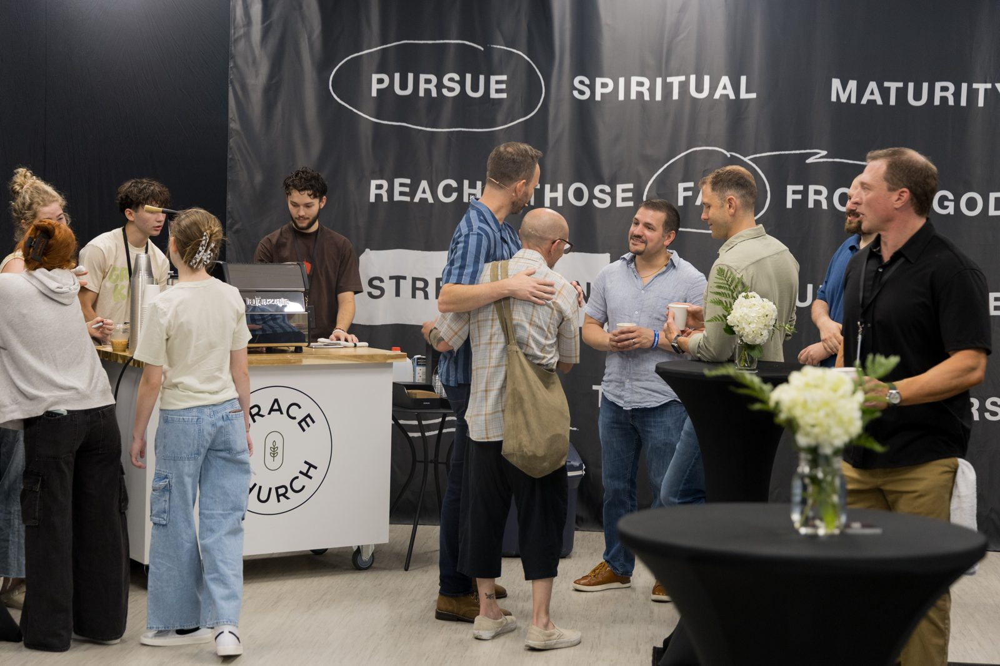
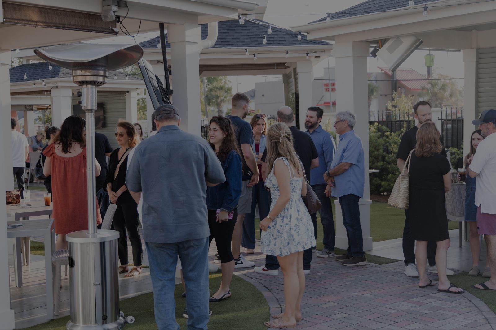
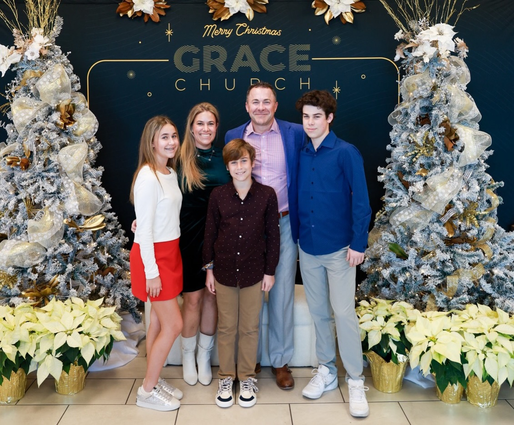
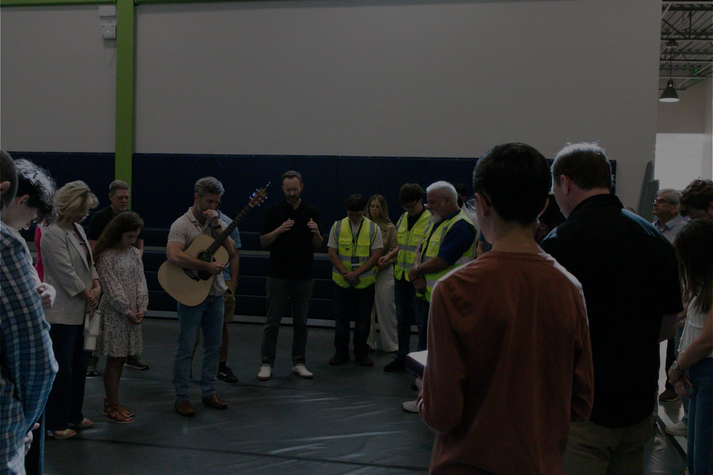
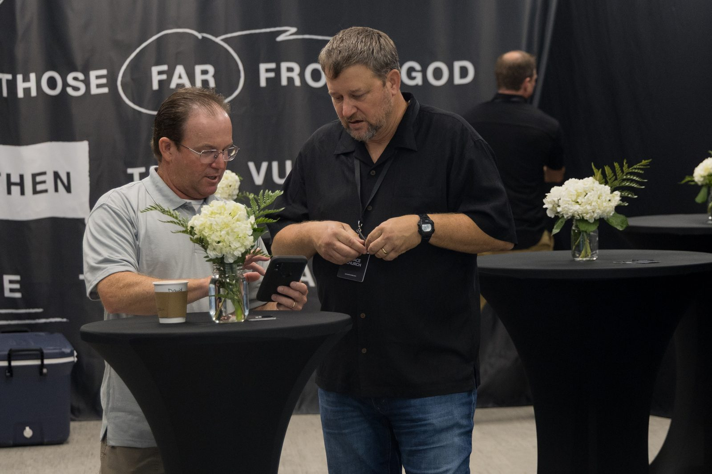
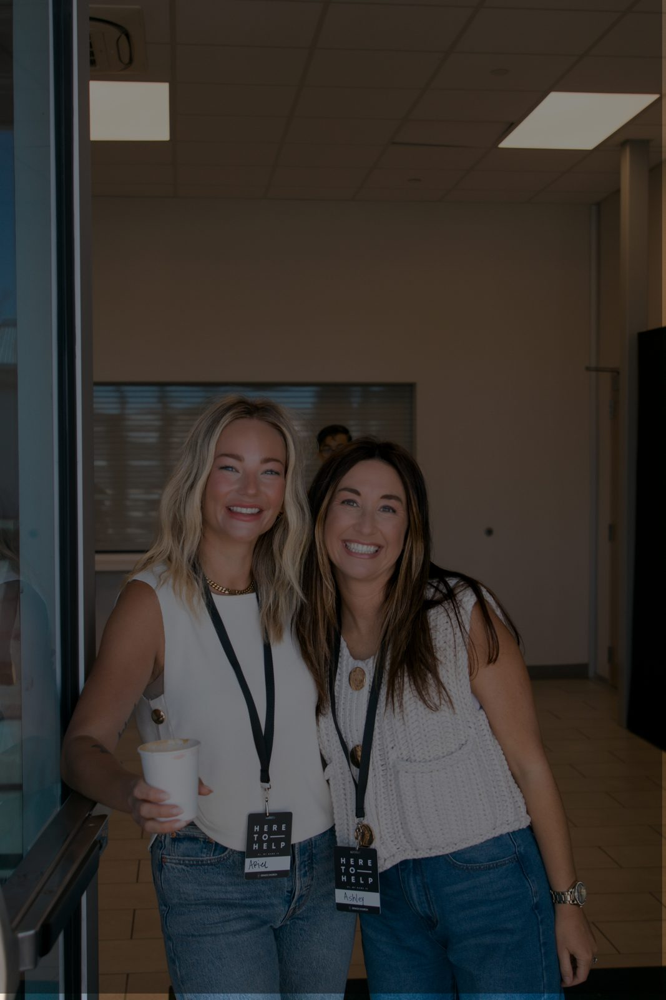

A Bag of Grace on Thanksgiving morning, Christmas Eve services on December 24, and gifts for children in foster care.
Learn How to Help

On Thanksgiving morning, Grace Church is bringing a Bag of Grace to every patient at Manning Family Children’s Hospital.
Each tote bag is filled with toys, activities, and gifts to bring patients and their families a smile.


We are holding two Christmas Eve services on Thursday, December 24. Come as you are. We would love to celebrate with you.

Grace Church is partnering with Crossroads in New Orleans to provide gifts for children in the foster care system throughout our city.
To help, give to the Holidays fund below.
Your financial generosity provides Grace Church the ability to accomplish the vision we have to help people Know God and Tell His Story.
Give to GraceYou can help with the Bag of Grace and the gifts for children in foster care by giving to the Holidays fund. You will find it under the Giving tab on our website.
Give to the Holidays Fund
We gather every Sunday at 9:00 AM and 10:45 AM. Our address is 1108 Shrewsbury Rd in Jefferson at Dr. John Ochsner Discovery School. Be sure to follow us on social media @gracechurch.la on Instagram and Grace Church LA on Facebook.
Find our service time, directions, children’s programming, and what to expect.
Plan a Visit